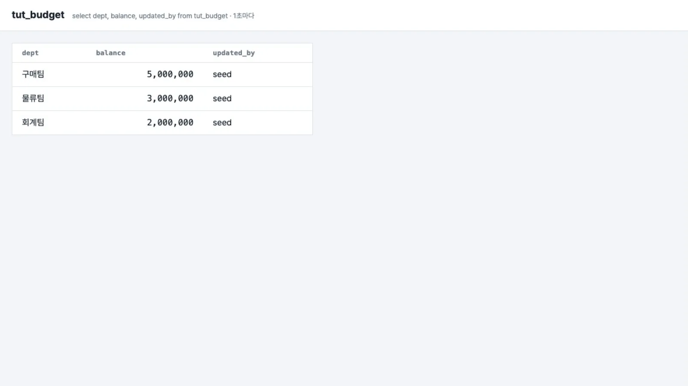
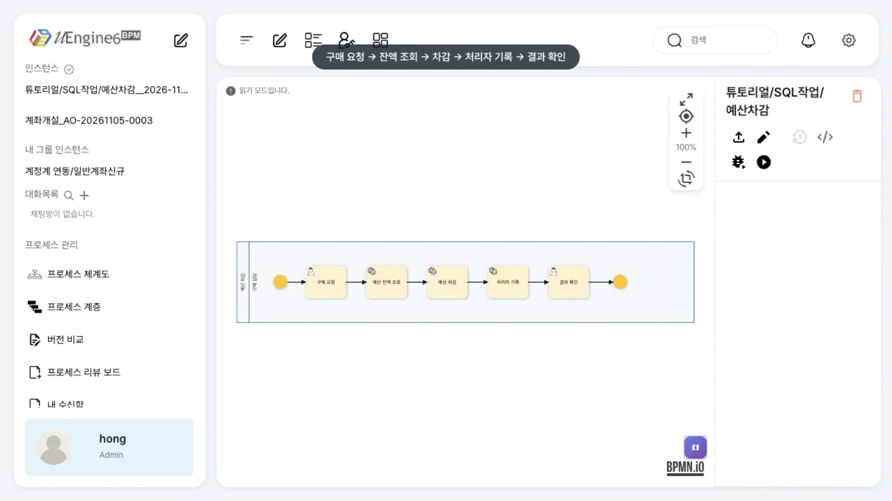
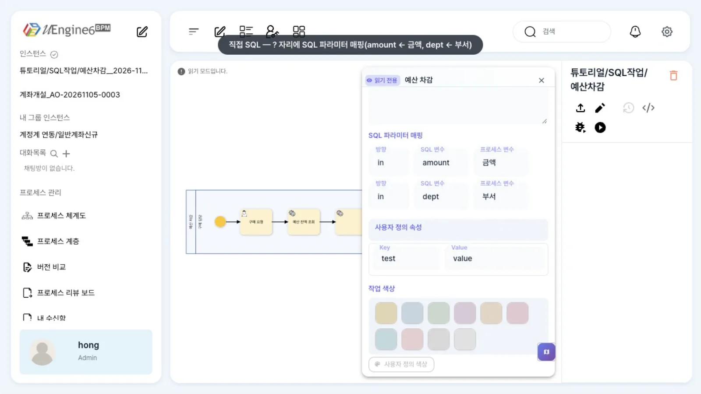
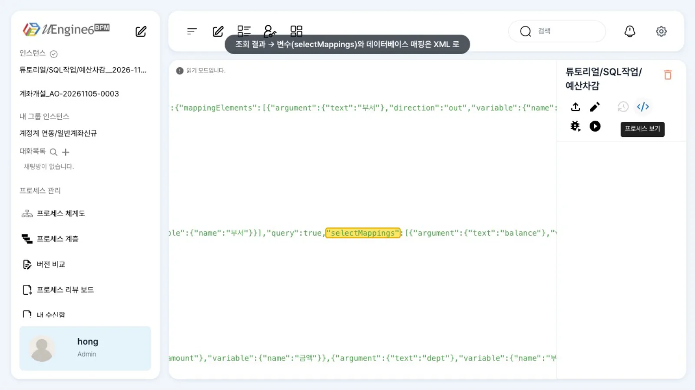
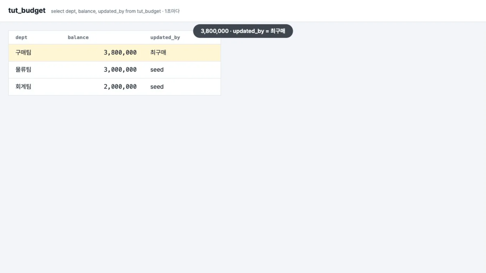
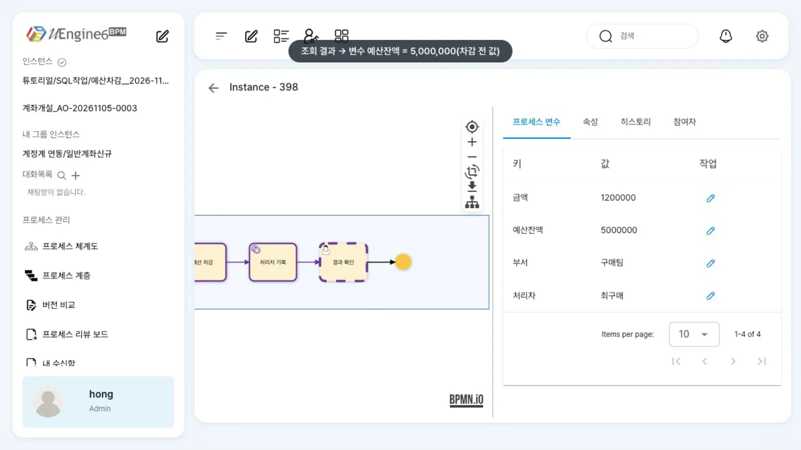

SQL 작업으로 데이터베이스 표를 읽어 변수에 담고, 변수 값으로 표를 고칩니다. 직접 쓴 SQL은 패널에서, 조회 결과 매핑과 데이터베이스 매핑은 XML로 설정합니다.
무엇을 · 왜#
SQL 작업은 서비스 작업의 한 갈래(org.uengine.kernel.bpmn.SQLTask)입니다. 부서 예산 잔액을 읽어 결재선을 정하거나, 결재가 끝난 뒤 업무 표의 상태를 바꾸는 것처럼, REST API가 없는 사내 DB를 프로세스 한 단계에서 다뤄야 할 때 씁니다.
서비스 작업과 마찬가지로 앞 작업의 완료 요청 안에서 동기로 실행되고, 실패하면 그 완료가 되돌려집니다.
| 방식 | 설정 | 하는 일 |
|---|---|---|
| 직접 SQL | sqlStmt + parameters(? 순서대로 변수) |
아무 SQL. 조회면 query: true |
| 조회 결과 → 변수 | selectMappings(열 → 변수), applySingleValueOnly |
첫 행의 열 값을 변수에 |
| 데이터베이스 매핑 | strategy = DatabaseMappingStrategy(queryMode SELECT·INSERT·UPDATE·DELETE, 표.열 ↔ 변수, 키) |
SQL 없이 표·열과 변수를 짝지어 |
| 연결 | connectionFactory |
DataSourceConnectionFactory(process-service의 DataSource, 이름을 비우면 기본) 또는 JDBC 직접 |
이 장의 표는 엔진과 같은 DB(uengine)에 만든 연습용 tut_budget입니다. 운영에서는 업무 DB를 별도 DataSource로 붙이세요.
따라 하기#
예제는 튜토리얼/SQL작업/예산차감입니다. 최구매가 「구매 요청」에 부서와 금액을 넣으면, 「예산 잔액 조회」가 잔액을 읽어 변수에 담고, 「예산 차감」이 잔액을 줄이고, 「처리자 기록」이 처리한 사람을 표에 남깁니다.
- 표 만들기. 연습용 표를 만듭니다.
영상에서는 이 표를 1초마다 다시 읽는 간단한 화면(
create table tut_budget (dept varchar(40) primary key, balance bigint not null, updated_by varchar(40)); insert into tut_budget values ('구매팀', 5000000, 'seed'), ('물류팀', 3000000, 'seed'), ('회계팀', 2000000, 'seed');bpm-tut-sql-task/tool/budget-view.mjs,:9704)으로 보여 주었습니다.
tut_budget — 구매팀 5,000,000 - 정의 보기.
튜토리얼/SQL작업/예산차감을 엽니다. 「구매 요청」 뒤에 SQL 작업 세 개가 이어집니다.
튜토리얼/SQL작업/예산차감 - 직접 SQL 패널. 「예산 차감」을 두 번 누릅니다. 「SQL」에
update tut_budget set balance = balance - ? where dept = ?, 「SQL 파라미터 매핑」에?순서대로amount ← 금액,dept ← 부서가 있습니다.
「예산 차감」 — SQL 파라미터 매핑 - 조회 결과 매핑은 XML.
</>(XML 보기)에서 「예산 잔액 조회」의 JSON을 보면query: true와selectMappings(balance → 예산잔액)가 있습니다. 이 두 칸은 패널에 없습니다(아래 알려진 제약).
XML 보기 — query·selectMappings - 실행. 최구매의 업무 목록에서 「구매 요청」을 열어 「부서」
구매팀, 「금액」1200000을 넣고 완료합니다. - 표 확인. 구매팀 잔액이
5,000,000 → 3,800,000이 되고updated_by가최구매로 바뀝니다.
tut_budget — 구매팀 3,800,000, updated_by 최구매 - 변수 확인. 관리자 화면의 「프로세스 변수」에
예산잔액 5000000이 있습니다. 조회가 차감보다 먼저 실행되었으므로 차감 전 값입니다.
관리자 화면 — 변수 예산잔액 5000000
설정 레퍼런스#
세 작업의 JSON#
// 예산 잔액 조회 — 직접 SQL(조회) + 결과 → 변수
{"_type": "org.uengine.kernel.bpmn.SQLTask",
"connectionFactory": {"_type": "org.uengine.util.dao.DataSourceConnectionFactory", "dataSourceName": ""},
"sqlStmt": "select balance from tut_budget where dept = ?",
"parameters": [{"argument": {"text": "dept"}, "variable": {"name": "부서"}}],
"query": true,
"selectMappings": [{"argument": {"text": "balance"}, "variable": {"name": "예산잔액"}}],
"applySingleValueOnly": true}
// 예산 차감 — 직접 SQL(갱신), ? 는 parameters 순서
{"_type": "org.uengine.kernel.bpmn.SQLTask", "connectionFactory": {…},
"sqlStmt": "update tut_budget set balance = balance - ? where dept = ?",
"parameters": [{"argument": {"text": "amount"}, "variable": {"name": "금액"}},
{"argument": {"text": "dept"}, "variable": {"name": "부서"}}]}
// 처리자 기록 — 데이터베이스 매핑(UPDATE, 키 = dept)
{"_type": "org.uengine.kernel.bpmn.SQLTask", "connectionFactory": {…},
"strategy": {"_type": "org.uengine.kernel.bpmn.sql.DatabaseMappingStrategy", "queryMode": "UPDATE",
"mappingContext": {"mappingElements": [
{"argument": {"text": "tut_budget.dept"}, "variable": {"name": "부서"}, "isKey": true},
{"argument": {"text": "tut_budget.updated_by"}, "variable": {"name": "처리자"}}]}}}
| 패널 칸 | JSON | 비고 |
|---|---|---|
| 「SQL 태스크로 전환」 | _type = SQLTask |
서비스 작업 패널에서 바꿉니다 |
| JDBC Driver · Connection URL · DB User · DB Password | connectionFactory(JDBC) |
기본값 jdbc:postgresql://postgres:5432/uengine은 도커 안 주소. 로컬 스택이면 localhost:5632 |
| SQL | sqlStmt |
|
| SQL 파라미터 매핑(방향·SQL 변수·프로세스 변수) | parameters[] |
? 순서 |
| (패널에 없음) | query, selectMappings, applySingleValueOnly, strategy |
XML로만 |
엔진에는 표·열 목록을 돌려주는 API도 있습니다(데이터베이스 매핑을 설정할 때 참고).
curl -H "Authorization: Bearer $TOKEN" 'http://localhost:9294/sql-metadata/tables?dataSourceName='
curl -H "Authorization: Bearer $TOKEN" 'http://localhost:9294/sql-metadata/columns?table=tut_budget&dataSourceName='
# {"table":"tut_budget","columns":[{"name":"dept","type":"varchar","nullable":false,"primaryKey":true}, …]}
알려진 제약#
SQL 작업 패널에서 저장하면 조회 결과 매핑이 사라집니다
이 브랜치의 패널은 연결 칸(JDBC)·SQL·파라미터 매핑만 다룹니다. 패널에서 저장하면 query·selectMappings·applySingleValueOnly·strategy를 지우고 연결을 JDBC(postgres:5432)로 채웁니다. 조회 결과가 변수로 들어가지 않고, 로컬 스택에서는 연결도 실패합니다.
조회·데이터베이스 매핑을 쓰는 작업은 패널을 열어 저장하지 말고, XML 보기에서 JSON을 고치세요. 엔진 저장소의 docs/sql-task.md가 말하는 「연결 방식」·「설정 방식(데이터베이스 매핑)」·테이블 고르기·SQL 미리보기 화면은 이 프런트에 없습니다.
- 서비스 작업 패널의 「사용자 정의 속성」에는 정의에 없는
test=value줄이 늘 보입니다(패널 기본값). 패널에서 저장한다면 이 줄을 지우세요. - SQL 작업이 실패하면(표가 없음, 제약 위반) 앞 작업의 완료가 HTTP 500으로 거절되고 인스턴스는 그 작업에 머뭅니다. 오류 경계를 붙이면 다른 경로로 보낼 수 있습니다(실패 경로와 되돌리기).
- 세 SQL 작업은 같은 완료 요청 안에서 차례로 실행됩니다. 이 예제에서는 차감이 실패하면 앞의 조회 결과 변수도 함께 되돌려집니다.
확인 문제#
「부서」에 `구매2팀`처럼 표에 없는 부서를 넣으면 어떻게 되나요?
조회는 행이 없어 예산잔액이 채워지지 않고, update는 0행을 고치고 끝납니다. 오류가 아니므로 프로세스는 「결과 확인」으로 갑니다. 없는 부서를 막으려면 조회 뒤에 게이트웨이를 두어 예산잔액을 검사하세요.
「처리자 기록」은 SQL을 쓰지 않았는데 어떻게 `updated_by`를 바꿨나요?
데이터베이스 매핑(DatabaseMappingStrategy, queryMode: UPDATE)이 표·열과 변수의 대응 관계로 update tut_budget set updated_by = ? where dept = ?를 만들어 실행했습니다. isKey: true인 열이 where 조건이 됩니다.